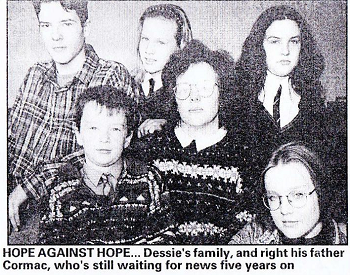

Article in the Saturday Extra Newspaper on 5th Anniversary of disappearance
Saturday EXTRA December 9, 2000
Five years ago today Ulster engineer Dessie Boomer and five colleagues vanished after their plane was reported missing over the Mediterranean. Now, Dessie's father Cormac still believes his son may still be ALIVE. The former SDLP councillor has vowed to bring his boy home and solve the mystery of Flight 9H-ABU.
Exclusive
By Martin Breen
THE FATHER of an Ulsterman who mysteriously disappeared in Tunisia exactly five years ago, claims his son may still be ALIVE.
Former SDLP Belfast city councillor Cormac Boomer fears his son, Dessie. who was reportedly on a plane that vanished onto thin air, may have been caught up in a terrorist incident.
He told the Extra last night that the information he had suggested his son could still be alive....somewhere.
Its the latest twist in a saga that has led to one of the greatest unsolved mysteries in aviation history.
Dessie Boomer has never been seen since disappearing with five fellow travellers in December 1995.
The married father—of—five from Banbridge, had been working in Libyan oilfields as an engneer and was on his way home for Christmas.
The unsolved incident has remained one of the greatest mysteries in aviation history.
Authorities said he was one of six passengers aboard flight Piper Lance 9H-ABU which vanished on a journey between Tunisia and Malta.
The 38 year old was on an air-taxi flight to make his way home to spend Christmas with his wife Mandy and their children.
By Martin Breen
THE FATHER of an Ulsterman who mysteriously disappeared in Tunisia exactly five years ago, claims his son may still be ALIVE.
Former SDLP Belfast city councillor Cormac Boomer fears his son, Dessie. who was reportedly on a plane that vanished onto thin air, may have been caught up in a terrorist incident.
He told the Extra last night that the information he had suggested his son could still be alive....somewhere.
Its the latest twist in a saga that has led to one of the greatest unsolved mysteries in aviation history.
Dessie Boomer has never been seen since disappearing with five fellow travellers in December 1995.
The married father—of—five from Banbridge, had been working in Libyan oilfields as an engneer and was on his way home for Christmas.
The unsolved incident has remained one of the greatest mysteries in aviation history.
Authorities said he was one of six passengers aboard flight Piper Lance 9H-ABU which vanished on a journey between Tunisia and Malta.
The 38 year old was on an air-taxi flight to make his way home to spend Christmas with his wife Mandy and their children.

However, his father Cormac said last night he had received information from well placed sources in Malta that the light aircraft never left Djerba, in Tunisia.
Wreckage and personal belongings were recovered from the sea by Tunisian fishermen 10 months after the disappearance.
But Mr Boomer, who viewed part of the wreckage has cast doubt on whether it came from a plane which
Wreckage and personal belongings were recovered from the sea by Tunisian fishermen 10 months after the disappearance.
But Mr Boomer, who viewed part of the wreckage has cast doubt on whether it came from a plane which
had crashed intot he sea. I have seen the wreckage and personal belongings which where found, and they were certainly not in the sea for 10 months as there were no signs of corrision from salt water", he added.
He also told the extra that he believes that there was a cover-up.
The former politician said, "I would hope he is still alive at this late stage. I hope he is becasue of the information that I have.
He also told the extra that he believes that there was a cover-up.
The former politician said, "I would hope he is still alive at this late stage. I hope he is becasue of the information that I have.
“It would contradict claims that the plane ever left the ground and crashed unto the sea."
“As long as there is breath in my body. I will be looking for my son. I dont care whose toes I trample on"
"It could be that he was in the wrong place at the wrong time, and that he was caught up in some type of terrorist incident. That is the most likely option.
One theory surrounding the fate of
“As long as there is breath in my body. I will be looking for my son. I dont care whose toes I trample on"
"It could be that he was in the wrong place at the wrong time, and that he was caught up in some type of terrorist incident. That is the most likely option.
One theory surrounding the fate of
Mr Boomer and the others on the plane was that, they were there at a time when Islamic fundamentalists arrived to exact revenge on their pilot, Carmel Bartolo.
Bartolo was the owner of a small private airline called Excelair.
One month before the plane vanished, a local Maltese newspaperimplicated Bartolo as an accomplice in the assassination of Islamic Jihad leader, Fathi Shqaqi, by members of the Israeli secret service.
The second possibility is that Mr Boomer and his fellow travellers were abducted by Islamic fundamentalists, and may still be alive.
The third possibility is that their flight plunged into the water in bad weather killing all on board. However, no bodies have ever been recovered.
A massive Search took place after the plane went missing involving sea and aircraft from five countries.
The US used specialised under-water search equipment, concentrating on an area in the gulf of Gebas, where, in this scenario, the plane was suspected of crashing but nothing was found.
Now, a TV programme is to be made to try and unravel the mystery.
In the New Year. TV3's 20/20 programme will be investigating the disappearance of Mr Boomer and flight 9H-ABU.
Bartolo was the owner of a small private airline called Excelair.
One month before the plane vanished, a local Maltese newspaperimplicated Bartolo as an accomplice in the assassination of Islamic Jihad leader, Fathi Shqaqi, by members of the Israeli secret service.
The second possibility is that Mr Boomer and his fellow travellers were abducted by Islamic fundamentalists, and may still be alive.
The third possibility is that their flight plunged into the water in bad weather killing all on board. However, no bodies have ever been recovered.
A massive Search took place after the plane went missing involving sea and aircraft from five countries.
The US used specialised under-water search equipment, concentrating on an area in the gulf of Gebas, where, in this scenario, the plane was suspected of crashing but nothing was found.
Now, a TV programme is to be made to try and unravel the mystery.
In the New Year. TV3's 20/20 programme will be investigating the disappearance of Mr Boomer and flight 9H-ABU.